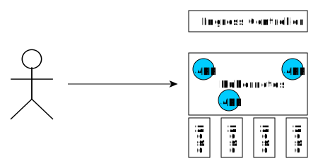

Kubernetes Introduction

Wojciech Barczyński
wbarczynski.pro@gmail.com
Wojciech Barczyński
- Lead Software Developer
& System Engineer - Organizer Golang Warsaw Meetup
- Visiting Lecturer at WSB and ALK
- Trainings & Consultancy
Story
Kubernetes + Go + ...
- Codility
- SMACC/Hypatos - Fintech / ML - since 2017
- Lyke - Mobile Fashion app - since 2016
I do not like Infra
Kubernetes
- Container management
- Battery for 12factor apps
- ...heading to integration platform
- ...becoming a framework for your Xubernetes
Kubernetes

make docker_push; kubectl create -f app-srv-dpl.yaml
Scale up! Scale down!

kubectl --replicas=3 -f app-srv-dpl.yaml
Deployment and Pods

Service and pods

Service matches pods based on labels
Ingress Controller

Basic Concepts
| Name | Purpose | |
|---|---|---|
| Service | Interface | Entry point (Service Name) |
| Deployment | Factory | How many pods, which pods |
| Pod | Implementation | 1+ docker running |
Load-balancing

Pods
- See each other on localhost
- Live and die together
- Can expose multiple ports

Side-cars

Example: rolling updates

Example: rolling updates

Example: rolling updates 
Resilient infra

Resilient infra

Resilient infra

Effective Kubernetes
- Start with small iterations
- Learn as-you-go
- Keep Kubernetes Understable
Hope the k8s community keep it this way
Effective Kubernetes
- Move configuration to runtime
- Do not terrorize your devs with K8S
- No free lunch... app must be smarter
Thank you. Questions?
https://github.com/wojciech12/workshop_kubernetes_and_cloudnative
Backup Slides

Monitor legacy with new stack